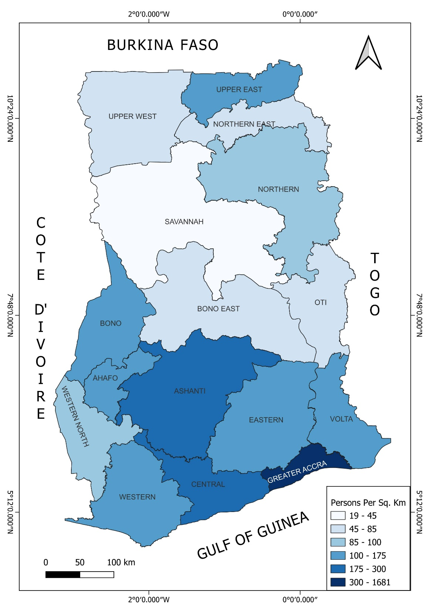

Spatial Context
Population Distribution Explains the Pattern
The CO and NO₂ distribution maps are not random — they closely mirror Ghana's population density map. Greater Accra, with 300–1,681 persons per km², is by far the most densely populated region, and it is also the primary hotspot for both gases.
High population density drives the key emission sources: greater vehicular traffic (many older, less efficient imported vehicles), expanded industrial activity, and higher energy demand. Ashanti Region, centred on Kumasi, shows the second highest density and the second highest pollutant concentrations — a direct correspondence.
The sparse northern regions (19–85 persons per km²) show correspondingly low CO and NO₂ levels, reinforcing that urbanisation and population concentration are the primary spatial determinants of these two gases.

Population Density Map of Ghana — Persons per km² (2021)
Greater Accra (300–1,681 persons/km²) and Ashanti are Ghana's most densely populated regions — the same areas with the highest CO and NO₂ concentrations, confirming the direct link between urbanisation and pollutant levels.
 CO Spatial Distribution Map — 2019 & 2024
CO Spatial Distribution Map — 2019 & 2024